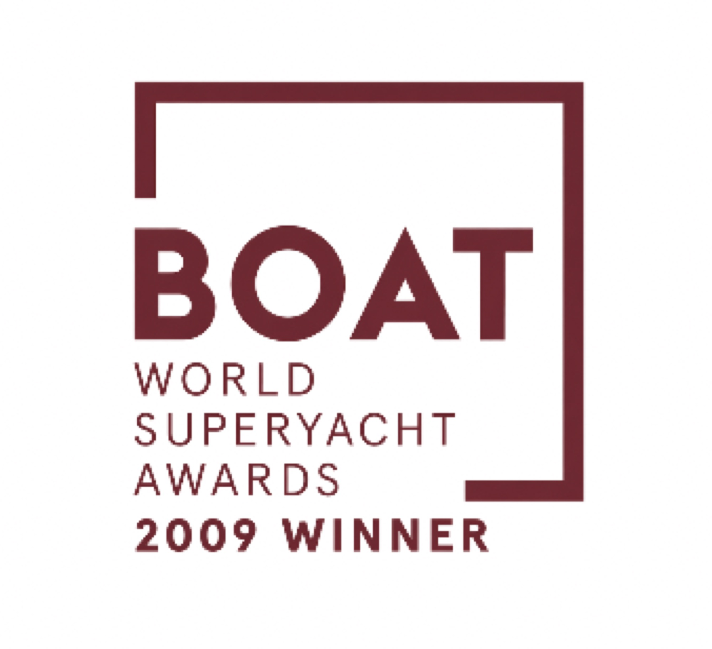

01
2009 · Winner
Best Exterior Styling
Awarded across all classes of motor yachts. The jury recognised NAIA's sculptural confidence — a profile of restraint, proportion, and quiet authority that has aged without compromise.
